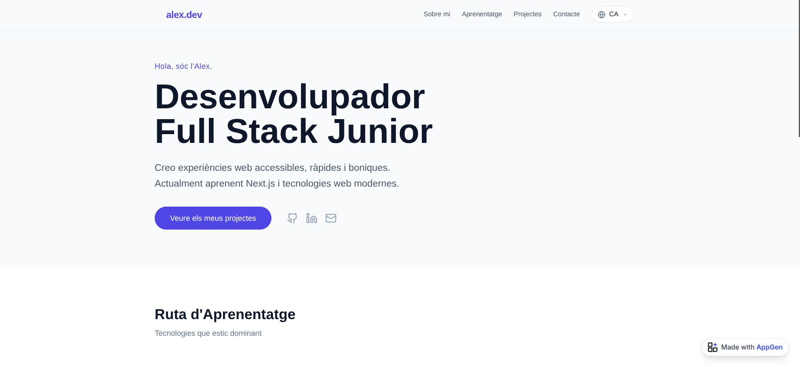
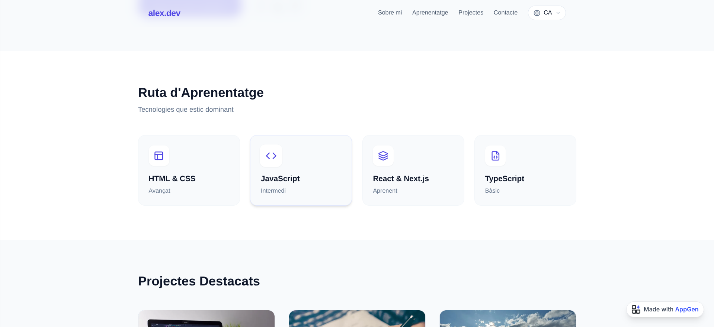

Aquest és ja el meu nou lloc web personal, un projecte que em fa especial il·lusió perquè representa un pas important dins del meu procés d'aprenentatge com a desenvolupador. Estic molt content de com ha quedat el resultat final, tant a nivell visual com estructural,  i sobretot del fet que ha estat el primer projecte en què no m'he trobat amb grans inconvenients ni bloquejos importants. Això m'ha permès treballar amb més fluïdesa, confiança i claredat a l'hora de prendre decisions, notant una evolució clara respecte a projectes anteriors. Per al disseny i l'estructura inicial m'he basat en un model creat amb intel·ligència artificial, concretament aquest,  que he utilitzat únicament com a punt de partida i font d'inspiració. A partir d'aquí, he adaptat i modificat el disseny segons les meves necessitats, he reorganitzat el codi i he afegit millores tant en l'experiència d'usuari com en la presentació del contingut, aplicant coneixements d'HTML, CSS i JavaScript que fins ara només havia utilitzat en exercicis més simples. Durant el procés, he anat entenent millor el perquè de cada decisió tècnica, fet que considero tan important com el resultat final. Crec sincerament que me n'he sortit bastant bé i, amb una mirada crítica però satisfeta, diria que fins i tot he aconseguit millorar alguns aspectes del model original. Aquest lloc web no és només un projecte acabat, sinó una base sòlida sobre la qual continuaré treballant, afegint nous projectes, funcionalitats i millores visuals a mesura que vagi avançant en el meu aprenentatge.
Nou lloc web
de desembre 2025, 23